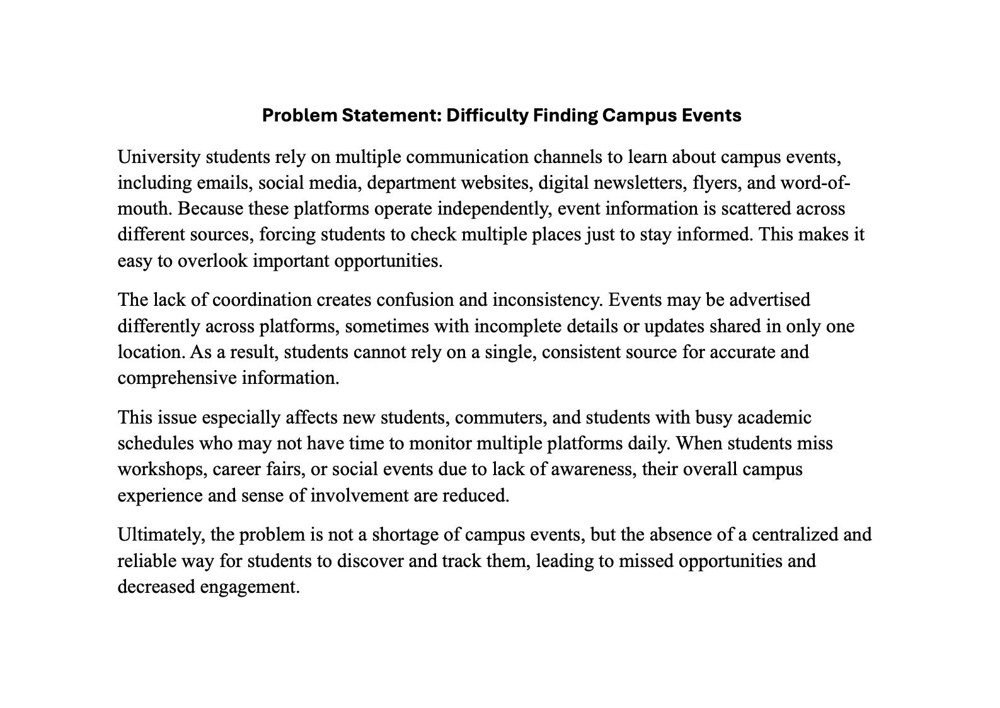

Assignment 1 - Problem Statement
Students struggle to find and track campus events when information is spread across multiple platforms.
CSCE 190 introduces the software development process through teamwork, problem analysis, prototyping, and communication. This site highlights assignment deliverables throughout the semester.
Students struggle to find and track campus events when information is spread across multiple platforms.